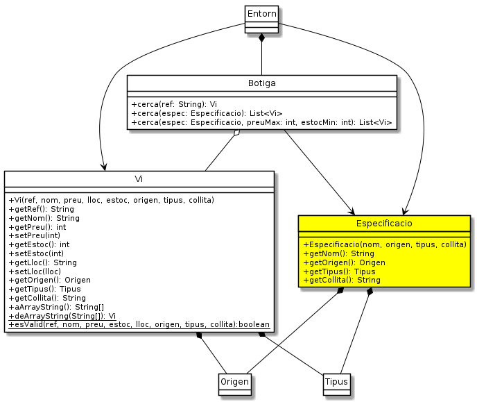

Exercici 05_15. Especificacions de vi¶
Exercici 05_15. Especificacions de vi¶
Context
Carpeta de lliurament:
05_15_especs/Continguts relacionats: Llistes
Com lliurar-lo: instruccions
[✓] Exercici amb autoavaluació
Enunciat
Amb els canvis de l’exercici anterior hem millorat força la usabilitat de l’aplicació.
Hi ha, però, un element que «canta»: per cercar els vins, el mètode
Botiga.cerca() ens cal crear un Vi. El vi que li passem, però, no
és exactament un Vi.
Per exemple, no li cal tenir referència, ja que si la té, faríem servir el
Botiga.cerca(String). A més, el preu no és tampoc el preu real
del vi sinó un màxim, i l’estoc es refereix al mínim necessari. Finalment,
la resta d’atributs poden ser null per especificar que no cal
considerar-lo en la cerca.
Quan dissenyem aplicacions orientades a objectes, hem de ser conscients de que aquests tipus d’incoherències tard o d’hora ens portaran problemes.
El cert és que, com ja ho diu bé el nom del seu paràmetre, el mètode
cerca() espera una especificació de vi i no un vi!. Si el
concepte especificació de vi sembla tenir tanta rellevància, potser ja
va sent hora que li reconeguem, no trobes?
Tenint tot això en compte, millorem el nostre disseny afegint la classe
Especificacio segons el següent diagrama.

El mètode Botiga.cerca()¶
Com que les especificacions de vi no disposen de totes les propietats,
Botiga ha d’oferir diferents mètodes de cerca. Fins ara n’oferia dos:
cerca(ref) i cerca(plantilla). Ara reemplaçarem aquest últim per
cerca(espec) i n’afegirem cerca(espec, preuMax, estocMin). un més
per permetre cercar per preu màxim i per estoc mínim. Fixa’t que
cerca(espec) serà equivalent a cerca(espec, -1, -1).
Deixarà d’estar disponible la cerca per localització. No és un gran problema. La raó principal de la cerca sol ser trobar aquesta localització i, si ja la sap, el més probable és que la sra. Estrella vagi directament a agafar l’ampolla que no pas usi l’aplicació.
Tot plegat fa que, una Especificacio sigui un valor immutable doncs
totes les seves propietats són fixes en el moment de la creació. Això, com
veurem més endavant, ens resultarà molt útil.
El Vi sempre correcte¶
L’aparició de la classe Especificacio ens permet afegir un sistema de
seguretat per la classe Vi de manera que una instància no pugui tenir
valors no vàlids. Ara, en cas que intentem construir un vi amb algun valor
no vàlid, o bé intentem modificar-lo de manera que quedi no vàlid,
llençarem l’excepció IllegalArgumentException. És una
RuntimeException ja que considerem que seria un error del nostre codi
si es produís.
Ara esValid() deixa de tenir sentit per validar una instància però sí
el voldrem per assegurar-nos que els valors són vàlids abans de crear una.
Per aquesta raó, passa a ser estàtic.
La validesa dels atributs de Vi són:
els valors de tipus String no poden ser buits, només blancs ni
null.el preu i l’estoc no poden ser negatius (ni tant sols
-1)els valors de tipus enumerat, no poden ser
null.
Aquests valors, però, continuaran sent vàlids per les propietats de
Especificacio.
Finalment, la classe Especificacio acceptarà null com valor per
les seves propietats. El que indicarà que no s’està especificant i que
s’accepta qualsevol.
Aquests canvis requeriran petites modificacions addicionals. Per exemple,
en el mètode Botiga.afegeix().